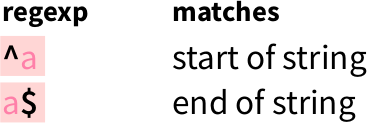
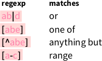
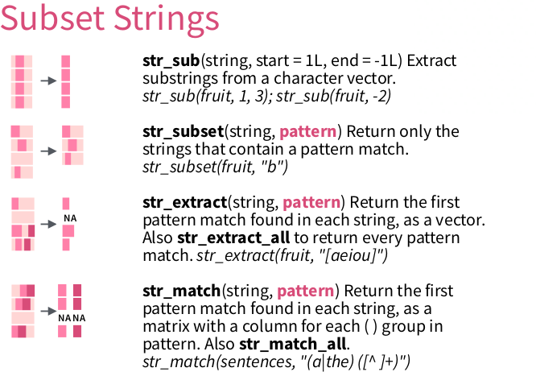

Section 1 06. Regular expressions and testthat
1.1 Introduction

‘Regular expressions’ from https://xkcd.com/208
1.1.1 Goal
In this chapter, you will learn:
- How to express your ideas as a regular expression
- Verify that you indeed did so
1.1.2 Why is this important?
Knowing the basics of regular expressions, prevents you having to hand-craft functions to detect patterns in any text.
Being able to verify your own assumptions allows you to speed up any development of any code. It is estimated that 80-90% of all the time, we are debugging our code. Being good at testing, is the way to become faster.
1.1.3 Exercise: Spot the pattern
Each line below is or contains a pattern. Observe what your brain does when interpreting a line. If it thinks: ‘Hey, that’s a [pattern], because [regular expression]’, you got your answer!
Answer, for each line: (1) what is it? (2) why did you think to?
Lithium-ion batteries play a central role in the world of technology.
But would it be safe to simply orbit the planet?
Your Next Samsung Phone May Not Come With a Charger in the Box
The restrictions would end 90 days after Portland's state of emergency order lifts.
Those cities have limits at 15%.1.1.4 Answers: Spot the pattern
Lithium-ion batteries play a central role in the world of technology.This is a sentence, because it ends with a dot.
But would it be safe to simply orbit the planet?This is a question, becase it ends with a question mark.
Your Next Samsung Phone May Not Come With a Charger in the BoxThis is a title, because most words start with an uppercase character.
The restrictions would end 90 days after Portland's state of emergency order lifts. This is a sentence with a decimal number, because there is a sequence of characters that consists out of numbers only.
Those cities have limits at 15%.This is a sentence with a percentage, because there is a sequence of characters that consists out of numbers only, with a percentage sign connected to it.
- Texts from https://slashdot.org.
1.1.5 What are regular expressions?
A regular expression ‘is a sequence of characters that define a search pattern’. Such a pattern may be a zip code, a date, or any other text of which you can say: ‘this is not just text, it is a [something]’.
For example, take a Dutch zip code: 9747 AG. Dutch zip
code have four digits, a space and then two uppercase
alphabet characters.
1.1.6 Applications
DNA data:
>KU215420.1|Felinecoronavirus|Feliscatus|Belgium|2013|Envelope
ATGATGTTTCCTAGGGCATTTACTATCATAGATGACCATGGTATGGTTGTTAGTGTCTTC
>KP143511.1|Felinecoronavirus|Feliscatus|UnitedKingdom|2013|Envelope
ATGATGTTTCCTAGGGCATTTACTATCATAGACGACCATGGTATGGTTGTTAGTGTCTTCProtein data:
>sp|P0DTC2|SPIKE_SARS2 Spike glycoprotein OS=Severe acute respiratory syndrome coronavirus 2 OX=2697049 GN=S PE=1 SV=1
MFVFLVLLPLVSSQCVNLTTRTQLPPAYTNSFTRGVYYPDKVFRSSVLHSTQDLFLPFFS
>sp|P0DTC5|VME1_SARS2 Membrane protein OS=Severe acute respiratory syndrome coronavirus 2 OX=2697049 PE=3 SV=1
MADSNGTITVEELKKLLEQWNLVIGFLFLTWICLLQFAYANRNRFLYIIKLIFLWLLWPV1.1.7 Multiple in R

The ‘stringr’ logo. ‘stringr’ is part of the Tidyverse
R functions to work with regular expressions:
stringr::string_egrepgsub
1.1.8 Dangers of regexes

‘Perl problems’, from https://xkcd.com/1171/
Regexes have different dialects, such as POSIX and perl. Within R, there are the base R dialect and the Tidyverse dialect.
I define UNIX as 30 definitions of regular expressions living under one roof.
Donald Knuth. Digital Typography, ch. 33, p. 649 (1999)
We’ll have to test!
1.2 Testing

From George Dinwiddie’s blog, http://blog.gdinwiddie.com/2012/12/26/tdd-hat/
1.2.1 Why test?
Testers don’t like to break things; they like to dispel the illusion that things work.
Kaner, Bach, Pettichord
- To be sure your code is correct
- Spend less time fixing bugs
- Unit of communication
- Clean software interface
1.2.2 Our first test
The testthat package is the Tidyverse package to write tests.
All test functions start with expect_, for example:
1.3 Detect a full match
Here, we will detect simple patterns using str_which.
Tip: run ?str_which for its documentation.

From ‘Work with Strings Cheatsheet’, https://rstudio.com/resources/cheatsheets
1.3.1 str_which demo
1.3.2 Example exercise: is_a_one
Write a function called is_a_one that detects if a string is one one,
using str_subset.
Use the anchors as shown on the cheatsheet to specify that the complete string, from begin to the end, must consist out of characters

From ‘Work with Strings Cheatsheet’, https://rstudio.com/resources/cheatsheets
These tests must pass:
expect_true(is_a_one("1"))
expect_false(is_a_one("X"))
expect_false(is_a_one("11"))
expect_false(is_a_one(c("1", "1")))
expect_false(is_a_one(integer(0)))
expect_false(is_a_one(NULL))
expect_false(is_a_one(NA))
expect_false(is_a_one(Inf))1.3.2.1 Answer is_a_one
1.3.3 Exercise: is_a_digit
Write a function called is_a_digit that detects if a string is one digit.
Use the regex pattern as shown on the cheatsheet to specify a digit:

From ‘Work with Strings Cheatsheet’, https://rstudio.com/resources/cheatsheets
These tests must pass:
expect_true(is_a_digit("0"))
expect_true(is_a_digit("1"))
expect_false(is_a_digit(""))
expect_false(is_a_digit("X"))
expect_false(is_a_digit(c("1", "2")))
expect_false(is_a_digit(character(0)))
expect_false(is_a_digit(NULL))
expect_false(is_a_digit(NA))
expect_false(is_a_digit(Inf))1.3.3.1 Answer: is_a_digit
expect_true(is_a_digit("0"))
expect_true(is_a_digit("1"))
expect_false(is_a_digit(""))
expect_false(is_a_digit("12"))
expect_false(is_a_digit("X"))
expect_false(is_a_digit(c("1", "2")))
expect_false(is_a_digit(character(0)))
expect_false(is_a_digit(NULL))
expect_false(is_a_digit(NA))
expect_false(is_a_digit(Inf))1.3.4 Exercise: is_a_word
Write a function called is_a_word that detects if a string is a word.
To simplify now, a word is defined as:
- Having one or more lowercase characters
- Having no dashes, nor numbers
Use the quantifiers as shown on the cheatsheet to specify that one needs one or more characters:

From ‘Work with Strings Cheatsheet’, https://rstudio.com/resources/cheatsheets
These tests must pass:
expect_true(is_a_word("a"))
expect_true(is_a_word("an"))
expect_true(is_a_word("apple"))
expect_false(is_a_word("X"))
expect_false(is_a_word("XX"))
expect_false(is_a_word("Hi"))
expect_false(is_a_word("hI"))
expect_false(is_a_word("hoWdy"))
expect_false(is_a_word(c("an", "apple")))
expect_false(is_a_word(character(0)))
expect_false(is_a_word(NULL))
expect_false(is_a_word(NA))
expect_false(is_a_word(Inf))1.3.4.1 Answer: is_a_word
expect_true(is_a_word("a"))
expect_true(is_a_word("an"))
expect_true(is_a_word("apple"))
expect_false(is_a_word("X"))
expect_false(is_a_word("XX"))
expect_false(is_a_word("Hi"))
expect_false(is_a_word("hI"))
expect_false(is_a_word("hoWdy"))
expect_false(is_a_word(c("an", "apple")))
expect_false(is_a_word(character(0)))
expect_false(is_a_word(NULL))
expect_false(is_a_word(NA))
expect_false(is_a_word(Inf))1.3.5 Exercise: is_dna_sequence
Write a function called is_dna_sequence that detects if a string is
a DNA sequence.
To simplify now, a DNA sequence is defined as:
- There are four characters, one per nucleotides
- These characters are uppercase (A, C, G and T)
Use the alternates as shown on the cheatsheet to specify that each character must be one of the four nucleotides:

From ‘Work with Strings Cheatsheet’, https://rstudio.com/resources/cheatsheets
These tests must pass:
expect_true(is_dna_sequence("A"))
expect_true(is_dna_sequence("AC"))
expect_true(is_dna_sequence("ACG"))
expect_true(is_dna_sequence("ACGT"))
expect_false(is_dna_sequence("a"))
expect_false(is_dna_sequence("Ax"))
expect_false(is_dna_sequence("xA"))
expect_false(is_dna_sequence("AxA"))
expect_false(is_dna_sequence(c("A", "CGT")))
expect_false(is_dna_sequence(character(0)))
expect_false(is_dna_sequence(NULL))
expect_false(is_dna_sequence(NA))
expect_false(is_dna_sequence(Inf))1.3.5.1 Answer: is_dna_sequence
expect_true(is_dna_sequence("A"))
expect_true(is_dna_sequence("AC"))
expect_true(is_dna_sequence("ACG"))
expect_true(is_dna_sequence("ACGT"))
expect_false(is_dna_sequence("a"))
expect_false(is_dna_sequence("Ax"))
expect_false(is_dna_sequence("xA"))
expect_false(is_dna_sequence("AxA"))
expect_false(is_dna_sequence(c("A", "CGT")))
expect_false(is_dna_sequence(character(0)))
expect_false(is_dna_sequence(NULL))
expect_false(is_dna_sequence(NA))
expect_false(is_dna_sequence(Inf))1.4 Extract a pattern
Here, we will extract a pattern using str_match.
Tip: run ?str_match for its documentation.

From ‘Work with Strings Cheatsheet’, https://rstudio.com/resources/cheatsheets
1.4.1 Context
Here we will work on a DNA sequence:
## [1] ">KX722530.1|Felinecoronavirus|Feliscatus|Denmark|2015|Envelope"
## [2] "ATGATGTTTCCTAGGGCTTTTACTATCATAGATGACCATGGTATGGTTGTAAGCGTCTTC"
## [3] "TTCTGGCTCCTGTTGATAATTATATTGATATTGTTTTCAATAGCATTGCTAAATGTTATT"
## [4] "AAGTTATGCATGGTTTGTTGCAATCTGGGTAAGACTATTATAGTACTACCTGCACGCCAT"
## [5] "GCATATGATGCCTACAAGACTTTTATGCAAATTAAGGCATATAATCCCGACGAAGCACTT"
## [6] "TTGGTTTGA"
## [7] ">FJ938053.1|Felinecoronavirus|cat|NetherlandsUtrecht|2007|Envelope"
## [8] "ATGATGTTTCCTAGGGCATTTACTATCATAGATGACCATGGTATGGTTGTCAGCGTCTTC"
## [9] "TTTTGGCTCCTGTTGATAATTATATTGATATTGTTTTCAATAGCATTGCTAAATGTTATT"
## [10] "AAGTTATGCATGGTATGTTGCAATTTGGGTAAGACTATTATAGTATTACCTGCACGCCAT"The data encoded in this text:
>[DNA sequence number]|[virus name]|[host species name]|[country of host]|[year]|[protein name]"
[DNA sequence]1.4.2 str_match
str_match returns:
- a matrix
- a row per line of text, containing the match or an NA
- a column per submatch (see later)
For example, using a ‘everything’ pattern, we get:
matches <- stringr::str_match(text, ".*")
expect_is(matches, "matrix")
expect_equal(nrow(matches), length(text))
expect_equal(ncol(matches), 1)
head(matches)## [,1]
## [1,] ">KX722530.1|Felinecoronavirus|Feliscatus|Denmark|2015|Envelope"
## [2,] "ATGATGTTTCCTAGGGCTTTTACTATCATAGATGACCATGGTATGGTTGTAAGCGTCTTC"
## [3,] "TTCTGGCTCCTGTTGATAATTATATTGATATTGTTTTCAATAGCATTGCTAAATGTTATT"
## [4,] "AAGTTATGCATGGTTTGTTGCAATCTGGGTAAGACTATTATAGTACTACCTGCACGCCAT"
## [5,] "GCATATGATGCCTACAAGACTTTTATGCAAATTAAGGCATATAATCCCGACGAAGCACTT"
## [6,] "TTGGTTTGA"Using a pattern that is specific for the DNA sequence descriptors, we get NAs:
matches <- stringr::str_match(text, ">.*")
expect_is(matches, "matrix")
expect_equal(nrow(matches), length(text))
expect_equal(ncol(matches), 1)
head(matches, n = 8)## [,1]
## [1,] ">KX722530.1|Felinecoronavirus|Feliscatus|Denmark|2015|Envelope"
## [2,] NA
## [3,] NA
## [4,] NA
## [5,] NA
## [6,] NA
## [7,] ">FJ938053.1|Felinecoronavirus|cat|NetherlandsUtrecht|2007|Envelope"
## [8,] NAUsing round brackets, the matrix gives one extra column per sub-match.
Here, we select for all info after the >:
matches <- stringr::str_match(text, ">(.*)")
expect_is(matches, "matrix")
expect_equal(nrow(matches), length(text))
expect_equal(ncol(matches), 2)
head(matches, n = 8)## [,1]
## [1,] ">KX722530.1|Felinecoronavirus|Feliscatus|Denmark|2015|Envelope"
## [2,] NA
## [3,] NA
## [4,] NA
## [5,] NA
## [6,] NA
## [7,] ">FJ938053.1|Felinecoronavirus|cat|NetherlandsUtrecht|2007|Envelope"
## [8,] NA
## [,2]
## [1,] "KX722530.1|Felinecoronavirus|Feliscatus|Denmark|2015|Envelope"
## [2,] NA
## [3,] NA
## [4,] NA
## [5,] NA
## [6,] NA
## [7,] "FJ938053.1|Felinecoronavirus|cat|NetherlandsUtrecht|2007|Envelope"
## [8,] NASelect the second column:
matches <- matches[, 2]
expect_is(matches, "character")
expect_equal(length(matches), 180)
head(matches, n = 8)## [1] "KX722530.1|Felinecoronavirus|Feliscatus|Denmark|2015|Envelope"
## [2] NA
## [3] NA
## [4] NA
## [5] NA
## [6] NA
## [7] "FJ938053.1|Felinecoronavirus|cat|NetherlandsUtrecht|2007|Envelope"
## [8] NAGet rid of the NAs using purrr:
matches <- purrr::discard(matches, is.na)
expect_is(matches, "character")
expect_equal(length(matches), 30)
head(matches)## [1] "KX722530.1|Felinecoronavirus|Feliscatus|Denmark|2015|Envelope"
## [2] "FJ938053.1|Felinecoronavirus|cat|NetherlandsUtrecht|2007|Envelope"
## [3] "GU553362.1|Felinecoronavirus|feline|Netherlands|2007|Envelope"
## [4] "KP143512.1|Felinecoronavirus|Feliscatus|UnitedKingdom|2013|Envelope"
## [5] "KU215424.1|Felinecoronavirus|Feliscatus|Belgium|2013|Envelope"
## [6] "HQ392470.1|Felinecoronavirus|feline|NetherlandsUtrecht|2007|Envelope"All of this in one go:
matches <- purrr::discard(
stringr::str_match(text, ">(.*)")[, 2],
is.na
)
expect_equal(length(matches), 30)
head(matches)## [1] "KX722530.1|Felinecoronavirus|Feliscatus|Denmark|2015|Envelope"
## [2] "FJ938053.1|Felinecoronavirus|cat|NetherlandsUtrecht|2007|Envelope"
## [3] "GU553362.1|Felinecoronavirus|feline|Netherlands|2007|Envelope"
## [4] "KP143512.1|Felinecoronavirus|Feliscatus|UnitedKingdom|2013|Envelope"
## [5] "KU215424.1|Felinecoronavirus|Feliscatus|Belgium|2013|Envelope"
## [6] "HQ392470.1|Felinecoronavirus|feline|NetherlandsUtrecht|2007|Envelope"1.4.3 Example exercise: extract_dna_sequence_numbers
Extract the DNA sequence numbers.
Hint:
- it is the text between
>and|Felinecoronavirus. - Use
\\|in your regex to indicate you want the pipe character ( asa|bis the regex for ‘a or b’)
These tests must pass:
expect_equal(30, length(extract_dna_sequence_numbers(text)))
expect_equal("KX722530.1", extract_dna_sequence_numbers(text)[1])
expect_equal("KP143511.1", extract_dna_sequence_numbers(text)[30])1.4.4 Answer: extract_dna_sequence_numbers
extract_dna_sequence_numbers <- function(text) {
purrr::discard(
stringr::str_match(text, ">(.*)\\|Felinecoronavirus.*")[, 2],
is.na
)
}expect_equal(30, length(extract_dna_sequence_numbers(text)))
expect_equal("KX722530.1", extract_dna_sequence_numbers(text)[1])
expect_equal("KP143511.1", extract_dna_sequence_numbers(text)[30])The regex ">(.*)\\|.*" would not work, because the asterisk is greedy.
1.4.5 Example exercise: extract_year
Extract the year the DNA sequence has been obtained. Convert the text to a number.
Hint: the year is always 4 consecutive numbers, from 1993 to (and including) 2016.
These tests must pass:
expect_equal(30, length(extract_year(text)))
expect_equal(2015, extract_year(text)[1])
expect_equal(2013, extract_year(text)[30])1.4.6 Answer: extract_year
extract_year <- function(text) {
as.numeric(
purrr::discard(
stringr::str_match(text, ".*([:digit:]{4}).*")[, 2],
is.na
)
)
}expect_equal(30, length(extract_year(text)))
expect_equal(2015, extract_year(text)[1])
expect_equal(2013, extract_year(text)[30])Here, the simple regex worked, because the asterisk is greedy.
1.5 Other functions
1.5.2 testthat::expect_match
You may want to test if a function’s output matches a pattern:
#' Get the version, for example '1.0'
get_version <- function() {
sample(c("1.0", "1.1"), size = 1)
}Using testthat::expect_match gives an unexpected result:
## Error: get_version\(\) does not match "1\\.[:digit:]".
## Actual value: "1\.1"Take a look at ?testthat::expect_match:
Details
expect_match() is a wrapper around grepl(). See its documentation for more detail about the individual arguments.
Use the base R regex dialect:
expect_match( get_version(), “1\.[[:digit:]]” ) ```
1.6 Bigger picture
1.6.1 Develop in packages
- Also when ‘just’ doing data analysis
1.7 Regex usage beyond R is common
Command-line tools with regular expressions:
grep,egrepseddir/ls
1.7.1 Don’t overdo it

‘Regex Golf’, from https://xkcd.com/1313/
Regex golf is a challenge to create the shortest regexes possible.
1.8 Resources
- RStudio cheatsheets, including the ‘Work with Strings Cheatsheet’